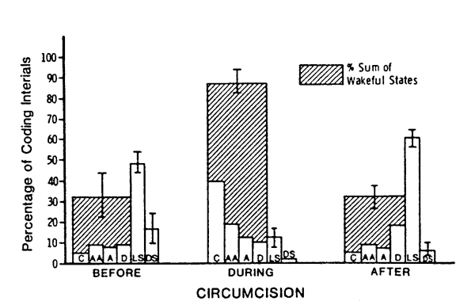

SUMMARY
(1) Circumcision (Gomco Clamp method) produced 3– to 4–fold increases in serum cortisol indications at 30 min in 3– to 5–day old human neonates. (2) Increases in serum cortisol were positively related to the neonates' state of behavioral arousal during circumcision. (3) Neonates given a pacifier to suck on during circumcision showed significantly less distress. (crying). (4) Behavioral arousal during circumcision was inversely related to behavioral arousal in the half hour following circumcision.
Key words—Pituitary-adrenal; cortisol; circumcision; human neonate; neonatal state.
INTRODUCTION
THE PURPOSE of this study was to examine the relationship between behavioral state and pituitary - adrenal cortical activity under conditions of physical trauma in the newborn. The pituitary-adrenal cortical system plays a major role in an organism's adaptation to traumatic conditions (Selye, 1956). Furthermore, in human adults and in animals activity of the pituitary - adrenal cortical system has been shown to be sensitive to changes in psychological state, especially under conditions eliciting anxiety and negative emotional arousal. (Anders et al., 1970; Hennessy & Levine, 1979; Frankenhaeuser, 1980). We have only recently begun to examine the ontogenesis of these psychobiological relationships in human infants. Two studies have shown moderate, positive correlations between the neonates behavioral state (with crying on the high end of the scale) and serum cortisol concentrations (a measure of adrenocortical activity) (Anders et al., 1970; Tennes & Carter, 1973). Neither of these studies examined the relationship between behavioral state and increases in serum cortisol concentrations over pre-session or basal values (Δ cortisol), which is the psychobiological relationship most frequently studied in human adults and animals (Hennesy & Levine, 1979; Frankenhaeuser, 1980). Furthermore, both studies examined infants under conditions of low or mild stress. No studies have examined whether these psychobiological relationships hold under conditions which can be considered traumatic in the neonatal period.
In this study, circumcision was the physical trauma. Circumcision was chosen for the following reasons. First, although there is continuing controversy over the medical necessity and advisability of circumcision, it is estimated that between 69 and 97% of all males born in the United States are circumcised shortly after birth (Kaplan, 1977). Thus circumcision is a potential traumatic event experienced by the majority of newborn males in this country. Second, few studies have found evidence of an adrenocortical response to physical stressors in the first week of life (Hillman & Giroud, 1965; Gutai et al., 1972). The exception was a study by Talbert et al. (1976) who found increases in serum cortisol concentrations immediately following circumcision. In their study, however, circumcision was performed only 2-6 hours after birth. Most circumcisions are performed later, at 3-5 days post-partum. There is some evidence that the neonatal adrenocortical system, while active during the first few hours after birth, may become less active or responsive, for several days, by 24-48 hr post-partum (Sippell et al., 1978). Thus we wanted to determine the responsiveness of the adrenocortical system to circumcision later in the neonatal period (3-5 days of age), when circumcision is typically performed. Finally, there is an increasing interest in the behavioral effects of circumcision (Emde et al., 1971; Anders & Chalemian, 1974; Richards et al., 1976; Rawlings et al., 1980) Both operative and postoperative changes in behavior, including behavioral state, have been noted. However, no studies have been attempted to examine neuroendocrine correlates of these behavioral effects. Given the work on neonatal stress, adrenocortical response, and subsequent reductions in emotionality in animals (Levine, 1969), and understanding of the psychobiology of neonatal stress in humans is clearly warranted.
In the following study infants were circumcised at 3- to 5-days of age. Blood samples for serum cortisol determination were obtained immediately before and 30 minutes after the beginning of surgery. Behavioral state were monitored for half hour periods before, during, and after circumcision. It was expected that (1) circumcision would produce significant increases in serum cortisol concentrations, and (2) increases in serum cortisol concentrations over pre-circumcision levels (Δ cortisol) Finally, the relationship between Δ cortisol and behavioral state post-circumcision was explored.
SUBJECTS AND METHODS
Eight healthy male infants were circumcised at 57-80 hours after birth. Subjects were selected on the following basis: 1 min Apgar greater than 7, birthweight greater than 3000 g, normal neonatal course, absence of distress state (crying), and absence of arousing stimulation (e.g. bath, physical examination) during the half hour prior to circumcision. All infants were breastfed. Maternal age ranged from 21 to 33 yr. Parents' consent was obtained shortly after the infant's birth.*
Circumcision was performed using the Gomco clamp method. Circumcision took between 16 and 36 min (average 20 minutes) from the time the infant was strapped to the surgical board until the infant was picked up. All circumcisions were performed between 08:00 and 15:00 hr, in all but one case by the same physician. Nursing procedures varied, with some nurses attempting to pacify the events during surgery, while others did not do so. It should be noted that circumcision involved the combination of a number of stressors (e.g. delay in feeding, physical restraint, tissue damage, and in the present study venipuncture). It was not the purpose of this study to determine the relative contributions of each stressor to the neonates pituitary-adrenal or behavioral response.
Blood samples (0.6 ml whole blood via scalp venipuncture) were obtained for serum cortisol determination immediately before the infant was strapped to the surgical board and half an hour later or immediately following circumcision if the surgery lasted more than 30 min. This procedure involved 2 separate venipunctures. The samples were immediately centrifuged and the serum separated and stored at -20C. Cortisol was measured by radioimmunoassay as described by Kao et al (1975). This assay is highly specific for cortisol; however the values reflected some small amounts of cortisone (0.3%) and corticosterone (1.7%) activity.
Behavioral state was recorded for half hour periods before, during, and after circumcision. Two observers recorded the infant's state every 30 sec, using the six-point scale described in Table 1. Estimates of inter-observer reliability were obtained on 7 neonates (3 pre-test and 4 actual subjects). Pearson correlation coefficients were computed using the total frequencies of each state before, during, and after circumcision, separately. All coefficients were above 0.90. In addition, for the purpose of examining the relationship between pituitary-adrenal activity and behavioral state, each behavioral state was weighted, as indicated in Table 1. The weights were then summed and averaged for each infant during each observation period (before, during, and after circumcision). Inter-observer reliablities for those weighted states were also quite high (r values >0.90).
RESULTS AND DISCUSSION
Circumcision produced striking increases in serum cortisol concentrations as can be seen in Fig. 1 (paired t = 15.33, p < 0.001). Increases over pre-circumcision levels (Δ cortisol) ranged from 10 to 19 µg/dl. Thus 30-40 minutes after the beginning of circumcision, concentrations of serum cortisol were 3-4 times greater than concentrations of serum cortisol immediately before circumcision. These results are consistent with results obtained by Talbert et al. (1976), indicating a similar responsiveness of the pituitary-adrenal cortical system to circumcision stress at 2-6 hr and 3-5 days after birth.
Table 1. Definitions of Behavioral States*
State Descriptor Definition
1 Deep Sleep Eyes shut. no REM's regular respiration, no
(or minimal) diffuse motor activity.
2 Light Sleep Eyes shut, occasional REM's irregular
respiration, occasional gross motor activity
3 Drowsy Eyes open and close, eyes look `dull',
unfocused or `heavy', variable activity
4 Alert Eyes open, `bright', focus on source of
stimulation, minimal motor movement.
5 Active Awake Eyes open but not shiny bright as in alert,
high motor activity level with thrusting of
extremities, may fuss but does not cry for
sustained periods.
6. Crying Sustained crying (more than 15 sec)
*State measures were derived from scales by Anders & Chalemian,
1974; Emde et al., 1971; and Brazelton, 1973.
|
Fig. 1 Serum Cortisol concentrations pre-circumcision and
post circumcision (Δ represent individual values).


Fig. 2 Percentage of coding intervals in each behavioral state
(C = cry, AA = active awake, A = alert, D = drowsy, LS = light sleep,
DS = deep sleep). (Bars represent ± S.E.M.
Circumcision also produced changes in behavioral state. Figure 2 depicts the mean percentage of time in each state before, during, and after circumcision. This figure also shows the percentage of time spent in awake states (crying, active awake, alert and drowsy). Wakefulness increased during circumcision, with percent crying showing the greatest increase. On the six-point scale, with crying at the high end of the scale, the average behavioral state during circumcision was 4.7 (range 3.8-5.2), compared to 2.4 (range 1.4-3.9) and 2.5 (range 2.0-3.1) before and after circumcision, respectively. Thus, circumcision produced dramatic increases in behavioral state, primarily in the form of increased crying. This increase was short-lived, however, with average state returning to near pre-circumcision levels during the half hour after circumcision. The reasons for such a rapid return to apparent normality will be discussed below.
As predicted, average behavioral state during circumcision was positively correlated with increases in serum cortisol concentrations over pre-circumcision levels (Pearson r = +0.79, p<0.05). The correlation of cortisol with crying, one component of behavioral state, was also significant (Pearson r = +0.71, p<0.05). Thus, infants who showed more behavioral distress during circumcision were also evidencing greater increases in adrenocortical activity. These data indicate that the close correspondance between pituitary-adrenal activity and behavioral state is not restricted to conditions of low or mild stimulation, but also is clearly evident under conditions of intense, traumatic stimulation in the neonate.*
Neonatal circumcision is performed without anesthesia and it is clearly stressful for the infant. Examination of techniques which may reduce stress thus is warranted. In this study some of the nurses in attendance attempted to calm the infants during circumcision by using a pacifier, while others did not do so. Although this was not a controlled aspect of the study, half of the infants received pacifiers while half did not. Use of the pacifier significantly reduced crying. Crying in the pacifier group ranged form 20 to 46% of the time during circumcision, while crying in the no-pacifier group ranged form 57 to 64% of the circumcision time. Increases in serum cortisol concentrations (Δ cortisol) showed similar patterns, with the mean in the pacifier group being 14.0 µg/dl (S.E. = ±1.6). while the mean in the no-pacifier group was 16.3 µg/dl (S.E. = ± 1.1). This difference was not significant in this small sample. Given the association between crying and adrenocortical response in the neonate, the possibility that pacifying stimuli may reduce the newborn's pituitary-adrenal response deserves further investigation in a larger sample. If such an effect could be shown, it would suggest that the cortisol response to circumcision is influenced by both psychological and physical factors. There is evidence that psychological factors can produce changes in pituitary-adrenal activity. (Hennessy & Levine, 1979). The extent to which psychological stressors can produce a cortisol response is an open question and cannot be inferred from the data in the present study.
Finally, behavioral state following circumcision was examined. As noted earlier there was a rapid return to pre-circumcision state, with most infants being either drowsy or in light sleep during the half hour following circumcision. This contrasts with the finding by Anders & Chalemain (1974) of greater wakefulness in the hour after circumcision. The rapid return to quiescent state in the present study was probably due to the infants being held, fed and comforted by their mothers.
Average behavioral state following circumcision was negatively correlated with both Δ cortisol (Pearson r = -0.49) and percent crying during circumcision (Pearson r = -0.72, p <0.05). Although only the correlation with crying reached statistical significance, thes data do suggest an inverse relationship between stress and subsequent behavioral state. This inverse relationship was demonstrated most clearly by two infants who were the only ones who spent any appreciable time in the most quiescent state, deep sleep following circumcision (27 and 18% of post-circumcision observation intervals, vs 0-7% for the other infants). These two infants had experienced the most stressful circumcisions, as indexed by (1) the greatest increases in serum cortisol concentrations, (2) the two higher percent crying scores, (3) the longest circumcisions, and (4) the fact that neither infant was given a pacifier to calm them during circumcision.
These data are open to several alternative interpretations. First, they may reflect the effects of fatigue. Second, several researchers have suggested the existence of a conservation-withdrawal coping process emerging early in development (Emde et al, 1971). Accordingly, the infant may withdraw into a quiescent state following intensely stressful experiences, thereby raising a stimulus barrier which prevents stimuli from having additional arousal-inducing effects. Finally, the mothers may have been responsive to their babies' stress, and altered their own behavior accordingly, thereby providing more calming stimulation for the more stressed or distressed babies. Regardless of the stressful stimulation, the newborn is capable of altering behavioral state in a manner which should increase the rate of return to homeostasis. The relationship between state following circumcision and the time course of pituitary-adrenal cortical activity remains to be examined.
*Neither average behavioral state during circumcision nor Δ cortisol were significantly correlated with the duration of circumcision (Pearson r values = 0.48 and 0.39 repectively.
The authors would like to thank Michael Steffen, Lorna R. Tittl and Linda Turner for their invaluable assistance during this project. This research was supported by Research Grant 432-0100-4909-02 from the University of Minnesota Graduate School to Megan R. Gunnar and by a grant from the Julie Nelson Foundation to Robert O. Fisch.
REFERENCES